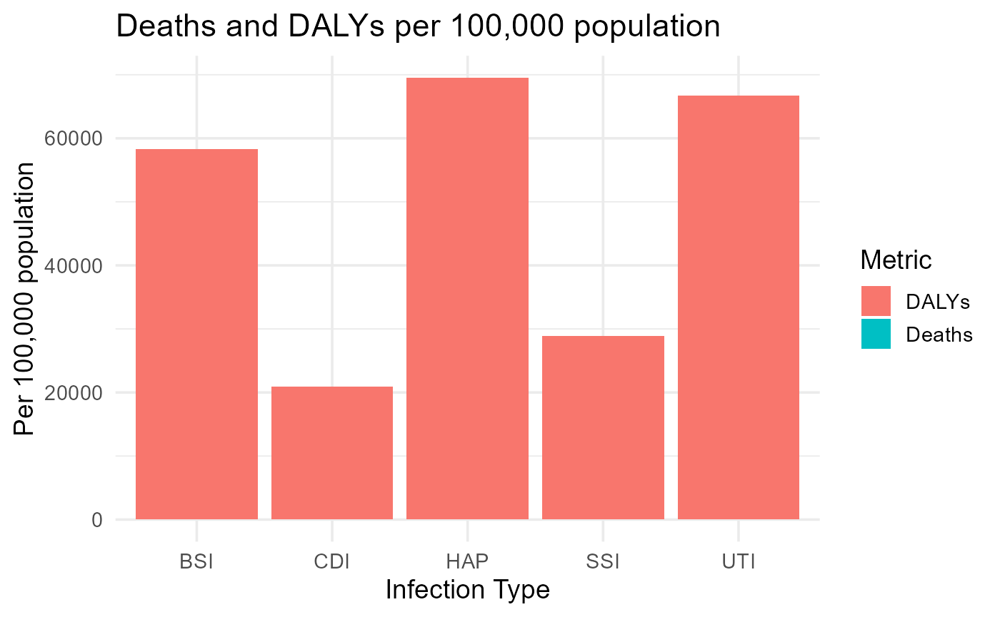

introduction.Rmd
summary(HAI_data)
#> Infection Cases Deaths DALY
#> Length:5 Min. : 26976 Min. :1917 Min. :20890
#> Class :character 1st Qu.: 36002 1st Qu.:2328 1st Qu.:28842
#> Mode :character Median : 93222 Median :3664 Median :58350
#> Mean : 95387 Mean :3156 Mean :48858
#> 3rd Qu.:106586 3rd Qu.:3905 3rd Qu.:66701
#> Max. :214150 Max. :3968 Max. :69508
#> YLL YLD
#> Min. :19937 Min. : 452
#> 1st Qu.:28376 1st Qu.: 977
#> Median :41306 Median : 8787
#> Mean :36814 Mean :11600
#> 3rd Qu.:44871 3rd Qu.:20243
#> Max. :49578 Max. :27539
ggplot(HAI_data, aes(x = Infection)) +
geom_col(aes(y = Deaths, fill = "Deaths"), position = "dodge") +
geom_col(aes(y = DALY, fill = "DALYs"), position = "dodge") +
theme_minimal(base_size = 14) +
labs(title = "Deaths and DALYs per 100,000 population",
y = "Per 100,000 population",
x = "Infection Type",
fill = "Metric")
This vignette demonstrates the distribution of deaths and DALYs per 100,000 population for different types of HAIs in Germany (2011). From the plot, it can be observed that SSI has the highest DALYs while HAP has the highest deaths.